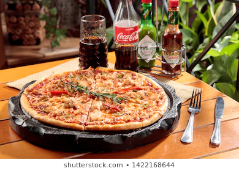

La Pizza Cesar es un pan plano horneado, habitualmente de forma redonda, elaborado con harina de trigo, sal, agua y levadura, cubierto con salsa de tomate y queso.​ Existen gran cantidad de variedades, principalmente debido al formato del pan, la forma de cocinarlo y el agregado de diversos ingredientes y salsas
5 Euros

6 Euros
10 Euros